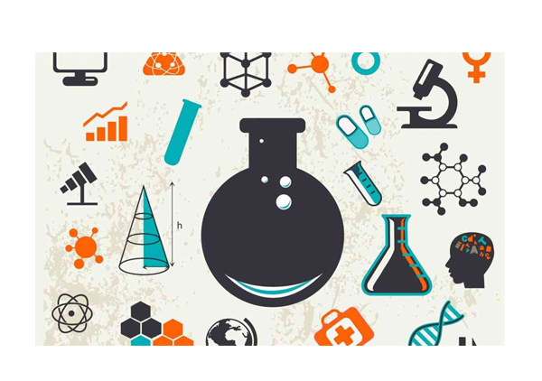

CARGA HORÁRIA ANUAL: 120 HORAS.
O terceiro ano do Ensino Médio Técnico, também tem uma intencionalidade (assim como o primeiro e segundo ano: autoconhecimento e emancipação, respectivamente) como proposta norteadora: a autonomia. Com a construção dessa autonomia esperamos que haja uma consolidação da criticidade dos alunos através da capacidade de resolução de problemas e deliberação de ideias e planos de ação, colocando em prática os conhecimentos científico e tecnológico desenvolvidos nos anos iniciais. Para que isso ocorra, as habilidades e competências a serem desenvolvidas pelos alunos através de projetos, envolvem o resgate do conceito de método científico, divulgação científica e suas implicações no mundo, considerando, além dos aspectos socioambientais, os valores éticos e morais. Assim, através de debates, apresentação de saberes, discussões e práticas, o aluno é capaz de investigar situações-problema com grande respaldo científico, propondo soluções que considerem demandas locais, regionais ou globais envolvendo principalmente temáticas como saúde, desenvolvimento e necessidades humanas socioambientais, consumo, lixo eletrônico e seus impactos no meio ambiente, com equidade, igualdade e respeito à diversidade étnica, cultural, religiosa, de gênero, entre outras. Tais saberes são responsáveis por suscitar no aluno inquietações e diálogos relacionados a temáticas éticas da ciência da natureza ou até que podem ter soluções diferentes das globalmente aceitas e pré-definidas, o que traz ao aluno novas inquietações relacionadas e conscientes, quanto aos seus desdobramentos e consequências, além da possibilidade da tomada de decisão para direções mais alinhadas a uma ciência crítica e humanizadora.
EMT3CNT1: Investigar situações problema e avaliar aplicações do conhecimento científico e tecnológico e suas implicações no mundo, utilizando procedimentos e linguagens próprios das Ciências da Natureza, para propor soluções que considerem demandas locais, regionais ou globais, e comunicar suas descobertas e conclusões a públicos variados, em diversos contextos e por meio de diferentes mídias e tecnologias digitais de informação e comunicação (TDIC).
EMT3CNT101: Interpretar eventos e informações provenientes de variadas fontes e de relevância sociocultural e ambiental através do uso do método científico e comunicá-los utilizando diferentes linguagens verbais e não verbais para públicos diversos, com clareza, objetividade e senso crítico, usando tecnologias digitais de informação e comunicação (TDIC) e promovendo o debate de ideias.
EMT3CNT102: Analisar e debater tecnologias e conhecimentos científicos considerados dilemas éticos da sociedade contemporânea, com base em argumentos consistentes, legais, éticos e responsáveis, e diferenciando-os de opiniões pessoais sem base científica.
EMT3CNT103: Investigar e discutir usos indevidos de conhecimentos naturais, ciência e tecnologia na justificativa de processos de discriminação, segregação e privação de direitos individuais e coletivos, em diferentes contextos sociais e históricos, para promover a equidade e o respeito à diversidade étnica, cultural, religiosa, de gênero etc.
EMT3CNT104: Investigar e analisar cadeias de produção, regras sociais e outros padrões e processos cotidianos, sejam eles individuais ou coletivos, aplicando o conhecimento científico na previsão e mitigação dos danos e riscos pessoais e socioambientais envolvidos, podendo fazer uso de dispositivos e aplicativos digitais que viabilizem a estruturação de simulações de tais riscos.
EMT3CNT105: Investigar e analisar diferentes materiais e suas aplicações industriais, urbanas, tecnológicas e pessoais, levando em consideração os componentes de diferentes equipamentos eletrônicos e avaliar suas origens, métodos de extração, usos e descarte, propondo soluções criativas, seguras e sustentáveis.
EMT3CNT106: Reelaborar, propor e construir soluções que envolvam situações - problema, identificando necessidades/desigualdades regionais e globais, considerando os efeitos de programas de infraestrutura e demais serviços básicos, apropriando- se do saber científico sob a ótica socioambiental, tecnológica, política e econômica, para promover ações que contribuam para o desenvolvimento dos seres vivos baseado em valores de equidade e cidadania e qualidade de vida.
METODOLOGIAS E DIVULGAÇÃO CIENTÍFICA
• Técnicas para definição de situações problemas, objetos de pesquisa, elaborações de
hipótese.
• Análise crítica da literatura científica, coleta e análise de dados, precisão das medidas,
elaboração de gráficos e tabelas.
• Boas práticas de discussão argumentativa, justificativa, construção e apresentação de
conclusões.
• Introdução à divulgação e comunicação de evidências, resultados e conclusões científicas
(feiras de ciências, olimpíadas, canais digitais, jornal, rádio, painéis informativos,
seminários e debates).
APLICAÇÃO DO CONHECIMENTO CIENTÍFICO NAS NECESSIDADES HUMANAS E
SOCIOAMBIENTAIS
• Reações de combustão, substituição e adição de hidrocarbonetos aromáticos e não-
aromáticos.
• Classificação e nomenclatura das cadeias carbônicas e suas aplicações.
• O conhecimento das plantas: características gerais do Reino Plantae, principais divisões,
ciclos de vida, peculiaridades e desenvolvimento.
• Alimentos ou comodities: o agronegócio no Brasil e suas implicações sociais e
ambientais.
• Biogeografia e uso de simulações para estudo da distribuição de animais e plantas.
• Conservação da energia mecânica, do momento linear e angular.
• Colisões: análises de acidentes, investigação científica e ciência forense.
• Gravitação universal, lançamentos de foguetes, satélites e viagens no espaço.
SAÚDE DAS POPULAÇÕES HUMANAS
• Metabolismo energético: fotossíntese e respiração, processos anaeróbicos de
transformação de energia: fermentação alcoólica e láctica (conceitos e aplicações).
• As angiospermas e a alimentação humana.
• Fome crônica e jejum.
• Parasitologia e microbiologia: principais infecções que afetam a população brasileira
(agentes etiológicos, agentes transmissores, profilaxia, tratamento, sintomas e ciclos de
transmissão das doenças); Archaea, Bacteria, Protoctista e Fungi.
• Saúde individual e coletiva (saneamento básico, vacinação, SUS); segurança alimentar,
garantia básica nutricional, higiene e alimentação equilibrada).
• Aplicações de processos químicos no cotidiano pessoal e na indústria.
• Cadeias de processos químicos industriais
EVOLUÇÃO E DESENVOLVIMENTO
• Classificação dos seres vivos: categorias taxonômicas, espécie e nomenclatura biológica.
• Os animais: principais grupos e características (plano corpóreos, anatomia e fisiologia
gerais dos representantes dos filos).
• Introdução à Sistemática filogenética: grupos monofiléticos; árvores filogenéticas.
• Funções vitais dos seres vivos e sua relação com a adaptação desses organismos a
diferentes ambientes.
• Usinas elétricas, rendimentos, custos e impactos.
• Fontes de energia renováveis e não renováveis; usinas elétricas, rendimentos, custos,
benefícios e impactos.
• Magnetismo e eletromagnetismo: correntes elétricas, campos magnéticos, eletroímãs,
forças magnéticas, o campo magnético terrestre e biomagnetismo.
CONSUMO, LIXO ELETRÔNICO E SEUS IMPACTOS NO MEIO AMBIENTE
• Eletroquímica e sua aplicação industrial.
• Polímeros sintéticos (adição, substituição, condensação e outras reações).
• Desenvolvimento sustentável: relação sociedade e ambiente, individual e coletivo,
soluções tecnológicas para qualidade ambiental e melhoria socioambiental.
• Campo e Força magnética.
• Indução eletromagnética: corrente contínua e alternada, Lei Faraday, Lei de Lenz.
• Radiação eletromagnética, espectro eletromagnético e efeito fotoelétrico.
• Espectroscopia: espectro de emissão e espectro de absorção.
APLICAÇÕES DA CIÊNCIA E TECNOLOGIA NA SOCIEDADE CONTEMPORÂNEA
• Fenômenos de origem nuclear (radiação ionizante e ionização, decaimento radioativo,
fissão e fusão nuclear e suas aplicações).
• Genética molecular: duplicação, transcrição e tradução.
• Expressão gênica diferencial.
• Sequenciamento, manipulação de DNA: inovações tecnológicas, descobertas, bioética.
• Biotecnologia e engenharia genética (clonagem, terapia gênica, controle de pragas,
transgenia).
• Radiação: partículas elementares, forças fundamentais da natureza, aceleradores de
partículas e modelo padrão.
• Radioatividade e acidentes nucleares.
ÉTICA E MORAL: A INFLUÊNCIA DA CIÊNCIA E TECNOLOGIA NA SOCIEDADE
• Armas químicas: Discussão da criação do gás mostarda e outros produtos de guerra
química e seus possíveis usos não bélicos.
• Uso de drogas atenuantes do comportamento (castração química e similares).
• Genética (darwinismo, genótipo, fenótipo). Darwinismo social (eugenia e discriminação).
Variabilidade genética (manutenção da biodiversidade).
• Armas biológicas: vírus, bactérias e outros patógenos que podem ser usados como
agentes infecciosos de massa (caso do antraz).
• Botânica e química: substâncias naturais obtidas para diversos usos nas sociedades
humanas (fármacos, drogas psicotrópicas, substâncias de valor industrial e comercial).
• Representatividade na ciência.
• Inclusão e exclusão digital e tecnológica.